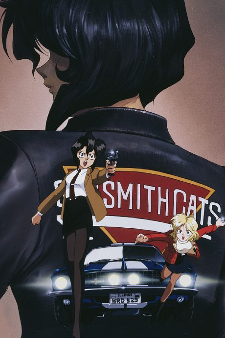
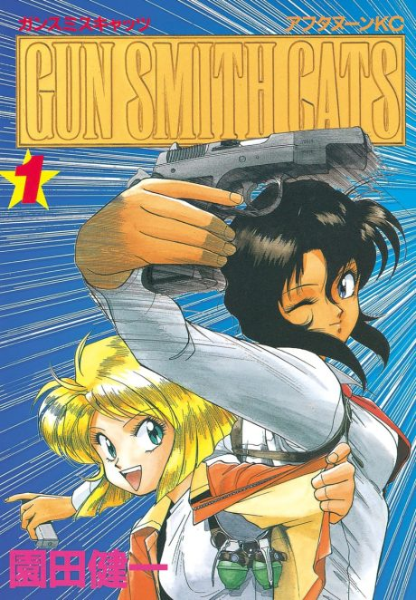

Anime
Manga1995 · Action, Comedy, Thriller
Gunsmith Cats
ガンスミスキャッツ
AniList7.4
Animeter—
Season 13 ep
MangaOwn end
Anime finished. Where does the manga pick up?
StatusOwn ending
The OVA tells an original story that only references the manga, so it does not lead into a specific chapter. Read the manga from chapter 1; it is finished at 75 chapters, with a sequel, Gunsmith Cats Burst.